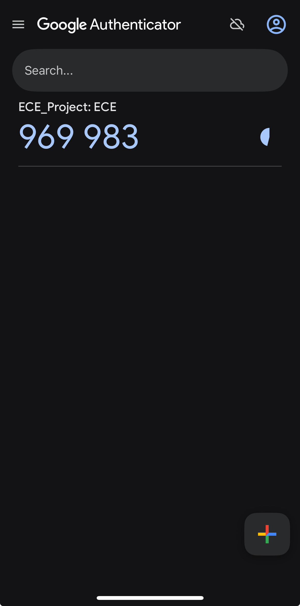

I made a two-factor authentication login system. Passwords are unsafe because
some people might not use the strongest password or someone might accidently
reveal their password. Two-factor authentication is incredibly important for
basic cybersecurity.

Week 2: Drew up my plan
Week 4: Password functionality with console
Week 5: QR code setup
Week 7: Authentication set up
Week 8-9: Fixed bugs
Week 11: Made UI
Week 12: Made Presentation
Success - It works!
Success - I learned new skills
Failure - Procrasination
Failure - Lack of hardware Skills
Cryptography: I learned a lot about generating and storing secure keys. Now I understand why keys on duo expire based on time.
Cybersecurity principles: The ways hackers can try and bypass passwords. How to store codes securely.
Embedded Systems (tried): Attemped to use a hardware based token. Clock sychronization.
I had a lot of fun learning more about cybersecurity. I was unsure of my threads before, but cybersecurity looks
like its gonna be one of my choices. Even though I failed to implement hardware, I became very interested in learning
about hardware and I am more excited to take future ECE classes. I feel more confident that switching from CS to Computer
Engineering was a good choice. I hope to add a hardware aspect to this project in the future.